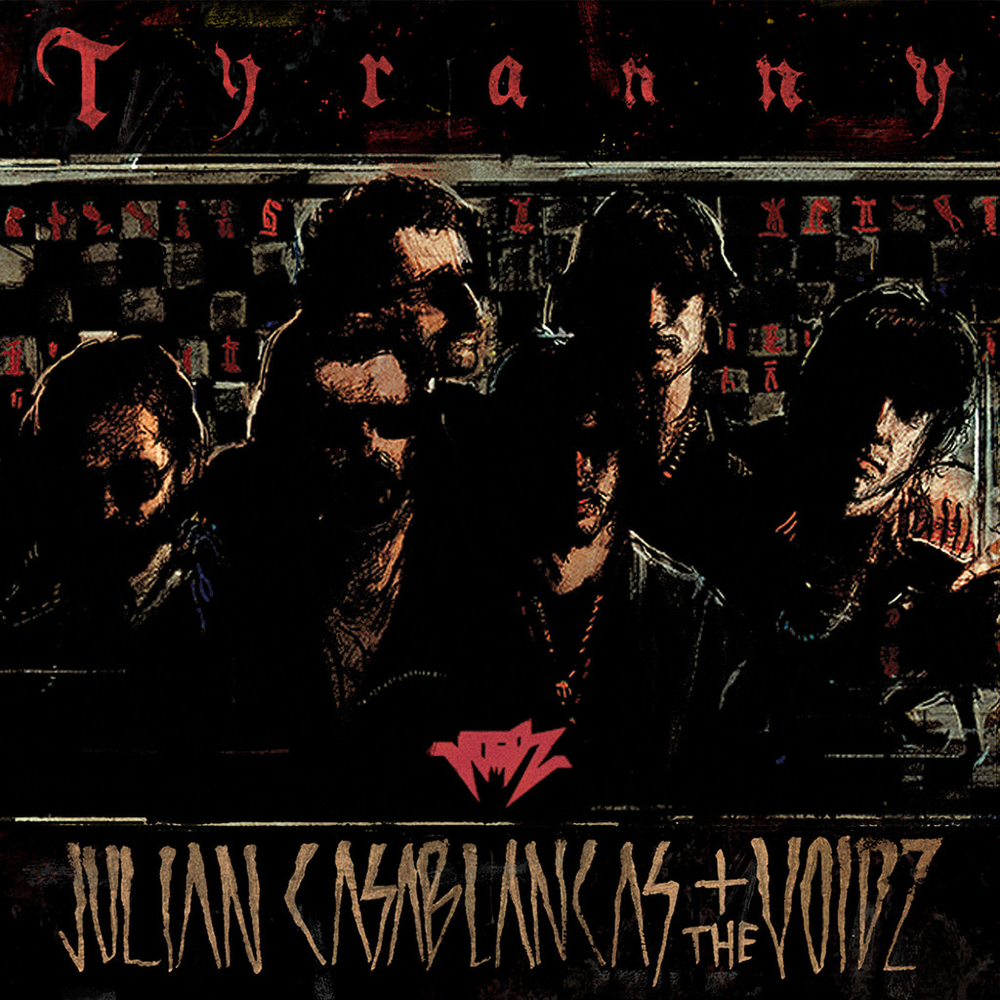

Julian Casablancas + The Tyranny
Geplaatst door: Daantje_NL op September 28, 2014
Genre: pop
De wegen van Julian Casablancas zijn nog altijd vrij ondoorgrondelijk. Op de eerste platen van The Strokes ging dat gepaard met een onweerstaanbare charme op muzikaal vlak, maar de laatste jaren heeft dat opvallend weinig opgeleverd. Zijn mierzoete soloplaat en die slaapverwekkende laatst van The Strokes kunnen we in ieder geval niet tot de hoogtepunten uit zijn carrière rekenen. Geldt dat wel voor zijn nieuwste project. Niet echt, tenzij je een hoge mate van ontoegankelijkheid een verdienste wilt noemen. Het vliegt letterlijk alle kanten op, wat zowel zijn voor- en nadelen heeft. Als geheel is het simpelweg een te lang en wisselvallig album. Daar staat tegenover dat er momenten zijn waarop Casablancas zich nog steeds een prikkelend muzikaal fenomeen toont. Zoals in het verontrustende Father Electricity bijvoorbeeld, waarop er ineens een fraai staaltje afro-jazz tevoorschijn komt. Vlak voor het einde biedt Nintendo Blood ook nog even een welkom lichtpunt. Aan ideeën geen gebrek, maar de manier waarop die vorm krijgen mag wat minder vrijblijvend.
Zijn mierzoete soloplaat en die slaapverwekkende laatst van The Strokes kunnen we in ieder geval niet tot de hoogtepunten uit zijn carrière rekenen.
Daar staat tegenover dat er momenten zijn waarop Casablancas zich nog steeds een prikkelend muzikaal fenomeen toont. Zoals in het verontrustende Father Electricity bijvoorbeeld, waarop er ineens een fraai staaltje afro-jazz tevoorschijn komt. Vlak voor het einde biedt Nintendo Blood ook nog even een welkom lichtpunt. Aan ideeën geen gebrek, maar de manier waarop die vorm krijgen mag wat minder vrijblijvend.
Tracklist:
- Take me in your army
- Crunch punch
- M.utually a.ssured d.estruction
- Human sadness
- Where no eagles fly
- Father electricity
- Johan von Bronx
- Business dog
- Xerox
- Dare I care
- Nintendo blood
- Off to war...